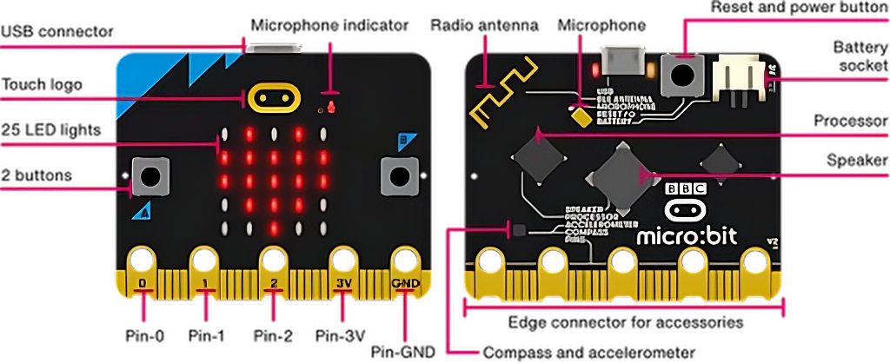

Domeniul tehnic reprezintă fundamentul dezvoltării societății moderne, înglobând totalitatea cunoștințelor, metodelor și aplicațiilor practice bazate pe știință și inginerie. Acesta include ramuri precum ingineria electrică, mecanică, informatică, electronică și automatizări, fiecare contribuind la progresul economic și la îmbunătățirea calității vieții.
Sectiunea 1
Sectiunea 2
Din punct de vedere conceptual, tehnica presupune aplicarea cunoștințelor teoretice pentru rezolvarea problemelor reale. Spre deosebire de știința pură, care urmărește înțelegerea fenomenelor naturale, domeniul tehnic are un caracter aplicativ, concentrându-se pe proiectare, optimizare și implementare. Astfel, inginerul devine un intermediar între teorie și practică, transformând ideile în produse și sisteme funcționale. Un element central al domeniului tehnic este procesul de proiectare inginerească. Acesta implică mai multe etape: definirea problemei, analiza cerințelor, generarea soluțiilor, modelarea, testarea și implementarea. În acest context, utilizarea instrumentelor moderne precum software-ul CAD (Computer-Aided Design) și simulările numerice joacă un rol esențial în reducerea costurilor și creșterea eficienței.
Sectiunea 3
De asemenea, automatizarea și digitalizarea au devenit piloni fundamentali ai tehnicii contemporane. Sistemele automatizate, bazate pe controlere logice programabile (PLC) și microcontrolere, permit optimizarea proceselor industriale și reducerea intervenției umane. În paralel, dezvoltarea tehnologiilor informatice a condus la apariția conceptelor precum Internet of Things (IoT), inteligență artificială și cloud computing, care interconectează dispozitive și sisteme la scară globală. Un alt aspect important îl reprezintă interdependența dintre diferitele ramuri tehnice. De exemplu, dezvoltarea unui sistem robotic necesită cunoștințe din mecanică (structură și mișcare), electronică (circuite și senzori) și informatică (algoritmi de control). Această interdisciplinaritate este o caracteristică definitorie a tehnicii moderne.
Exemplu Imagine

Sectiunea 4
Totodată, domeniul tehnic ridică și provocări semnificative. Impactul asupra mediului, consumul de resurse și securitatea sistemelor sunt probleme majore care necesită soluții sustenabile. Inginerii trebuie să proiecteze tehnologii eficiente energetic și să ia în considerare efectele pe termen lung asupra societății.
Sectiunea 5
Educația tehnică joacă un rol crucial în formarea specialiștilor capabili să răspundă acestor provocări. Aceasta combină teoria cu practica, dezvoltând atât gândirea analitică, cât și abilitățile de rezolvare a problemelor. În plus, evoluția rapidă a tehnologiei impune învățarea continuă și adaptabilitatea.